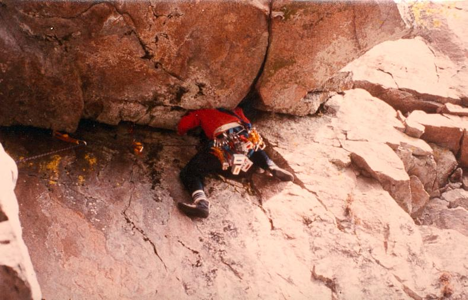

Bodberget
Lat: 61.44779398698079
Long: 16.501121520996094

Allmänt
Bodberget ligger ca 4 mil från Söderhamn, 7 kilometer från Arbrå. Det är det högra av de tre bergen öster om byn Flästa.
Norrberget
ligger nära, liksom
Hisnopp
och
Torpberget
.
Access
Det finns häckande fåglar på Bodberget vilket innebär klätterförbud fram till 1:a Augusti.
Kommunikationer
Väggar
Väggarna vätter mot söder. Längst till höger finns Östpelaren med två stora tydliga överhäng. Till vänster om denna ligger huvudväggen, vilken är som en stor amfiteater, urgröpt ur berget. Den är ungefär 100 m bred och 50 m hög, men ger ett rätt uppbrutet intryck. Till vänster om huvudväggen syns en tydlig klipprygg, en pelare som sluttar ca 60 grader lutning upp mot bergets topp, den s k Kvicksilverpelaren. Till vänster om pelaren finns en lös ränna, vilken tidigare begagnades som nedstigningsled. Till vänster om rännan ligger den s k övniningsklippan. Den är ca 75 m bred och 20 m hög och har åtminstone tidigare, när berget var mer frekventerat, varit så gott som renborstad från lavar och andra otrevligheter. Nedstigningen är helt problemfri och går i skogen till vänster om övningsklippan
Övningsklippan
- 1
- Kebab
- 4+
- (vid nedstigning) 75 m upp längs nedstigningnen räknat från röset vid "Endast för galningars" insteg, ligger en grov knytnävsspricka.
- 2
- Iskalla Killen
- 3+
- 30 m upp längs nedstigningen från röset räknat. Startar från en odefinierad pelare och sedan vidare upp på en fem m svaplatta. Avslutas med en hangeltravers vänster längs svaets topp. Osäkrad.
- 3
- Älvdansen
- 4
- Startar bakom tallen ca 10 m till vänster om röset. Startar vid en sned spricka, vid några utskjutande kloppblock. Ca 4 m upp kliver man höger över en bulle, ut på en list, sen följer man sprickor rakt upp mot toppen.
- 4
- Journey to Glory
- 4+
- Fritt: Kent Andersson, Per Calleberg och Pär Nolgård, 1981 Insteg på väggen strax till höger om föregående led. Följer tunna sprickor snett upp åt höger till ett rött dieder, korsas åt höger genom ett spagatsteg. Följer sedan den tydliga sprickan rätt upp på väggen till en tall.
- 5
- Änglavakt
- 4
- Startar i ett litet hörn till höger om föregående led. Följer sedan den röda diederformationen till toppen.
- 6
- Maiden Voyage
- 5-
- En tämligen slingrig och krystad linje. Startar till höger om "Änglavakt" med ett kliv in på densamma. Ca 6 m upp, kort travers höger till en nisch. Därifrån följer man den högra av två parallella sprickor diagonalt upp mot vänster. Sen följs ett ruttet dieder upp till toppen.
- 7
- Endast för Galningar
- 4+
- Fritt: Mikael Bäckman, Anders Dahl och Kent Andersson, 1980 Startar på den släta plattan mittför röset. Rakt upp till nischen, sen höger upp på en hylla. Vidare höger ut på väggen och sen rätt upp.
- 8
- Vårled
- 4-
- Startar i hörnet bakom tallen till höger om röset. Klättra snett uppåt vänster till nischen. Fortsätt rakt upp i den vänstra av de två diagonalsprickorna. Sprickan tar en till en hylla, från hyllan klättrar man rakt upp till toppen. 2 bultar.
- 9
- After Shave
- 5+
- Från hyllan på "Endast för galningar" klättrar man snett upp åt vänster till bultar, sedan rakt upp förbi en borrbult genom små tak tills man kommer in på "Le Freak"s utstegsspricka, som följs.
- 10
- Le Freak
- 5
- Fritt: Kent Andersson, 1983 Samma insteg som Vårled, sedan rakt upp över ett litet överhäng. Klättra förbi en borrbult och sen det tydliga diedret upp. Vik sedan av åt vänster och följ en diagonal spricka till toppen. Starta i samma hörn som för "Vårled", men gå höger över hyllan och nå det stora, tydliga flaket. Följ kanten på flaket och stå upp på hyllan ovanpå. Fortsätt snett upp åt höger förbi bultar.
- 11
- The Bisquit
- 5
- Fritt: Per Calleberg och Kent Andersson, 1982 Starta i samma hörn som för "Vårled", men gå höger över hyllan och nå det stora, tydliga flaket. Följ kanten på flaket och stå upp på hyllan ovanpå. Fortsätt snett upp åt höger förbi bultar.
- 12
- Främlingsvägen
- 5
- Fritt: Per Calleberg och Pär Nolgård, 1983 Följ räfflan på väggen någon meter till vänster om "Hybris". När flaket som leder upp till "The Bisquit" nås, kliver man ut åt höger och följer "Hybris" ett par meter upp. Så snart det är möjligt kliver man tillbaka ut åt vänster och klättrar rakt upp över den branta väggen.
- 13
- Hybris
- 4-
- Starta i ett kort hörn drygt fem m till höger om röset. Sedan upp över hyllor och det uppbrutna stråket av röd klippa under den tydliga, sluttande skivan.
- 14
- Utsvävningen
- 5-
- Utstegsvariant på "Hybris". Går rakt ut åt höger i den tydliga sprickan i den stora, sluttande stenskivan
Övningsklippan - Plattan
- 15
- Dynghålet
- 4+
- Klättra uppför en kort vägg upp på en inte så brant häll. Klättra upp till björken och följ den tydliga rännan som separerar övningsväggen från den tydliga plattan till höger. Skitig och kan inte rekomenderas.
- 16
- Tilltaget
- 5
- Fritt: Per Calleberg och Kent Andersson, 1982 Klättra uppför en kort vägg. Snedda upp över hällen till en björk. Följ räfflorna i plattans vänsterkant, förbi en borrbult, och vidare upp till toppen förbi en bult.
- 17
- Upptaget
- 4
- Fritt: Buster Delin och Kent Andersson, 1984 Klättra uppför hällen till basen av plattan. Följ en serie ojämnheter rakt uppför mitten på plattan. Säkra med fördel i "Tilltaget"'s borrbult. Har tyvärr en tendens att växa igen snabbt.
- 18
- Handtaget
- 4-
- Fritt: Buster Delin, 1984 Klättra uppför hällen till basen av plattan. Följ en serie ojämnheter i plattans högerkant. Osäkrad.
- 19
- Sol o vår
- 3-
- Startar från svackan till vänster om den lösa rännan. Följer en diederformation upp till en platta och sen en diagonal travers åt höger.
- 20
- Det ska vi fira
- ?
- Mellan Övningsklippan och Kvicksilverpelaren finns en lös ränna (Det ska vi fira) som förr användes som nedstigning. Den är dock lös och bör undvikas.
Kvicksilverpelaren - nedre delen

- 21
- Frysleden
- 2
- Följer vänsterkanten på kvicksilverpelaren. Efter ca replängd går man höger upp på själva pelaren och fortsätter rakt upp till toppen på berget. Lös. Bör undvikas, åtminstone sommartid, p g a risk för stenras.
- 22
- Över noll
- 4-
- Friktionsklättring längs toppen på kvicksilverpelaren. En replängd, 2 bultar. Standplats till höger vid en stor tall. Lätt nedklättring till vänster, runt hörnet. Man kommer så småningom ned till "Det skall vi fira", som så långt ned inte är särskilt lös.
- 23
- Stegen
- 3+
- Väggklättring tre meter till vänster om "Take Off". Går ihop med "Take Off" efter ca 10 meter. 2 eller 3 bultar.
- 24
- Take Off
- 4-
- 25 m upp på högersidan på kvicksilverpelaren finns en tydlig diederformation som toppas av ett överhäng. Klättra diedret, traversera vänster under taket, sen rännan upp till standplatstallenpå "Över noll". Variant: runda taket på dess högra sida.
- 25
- Stridspiloten
- 5-
- Fritt: Kent Andersson och Torbjörn Nilsson, 1982 Går uppför den sprickiga väggen alldeles till höger om "Take Off". Vidare upp på svaplattan ovanför. 1 borrbult på svaet. Standplats som för "Över noll".
- 26
- Venuspassagen
- 5-
- Fritt: Kent Andersson, Torbjörn Nilsson och Åke Englund, 1983 Starta som för "Stridspiloten", men vik av åt höger under ett litet tak. Kliv upp i en diagonal spricka och följ den snett upp åt höger till toppen. Om man vill förlänga klättringen, kan man kliva ut på "Stridspiloten"'s slutmetrar när man kommit upp på en hylla efter den diagonala sprickan. Standplats som för "Över noll".
- 27
- Sarras Sahara
- 5+
- Insteg 7 meter t h om "Venuspassagen". Följ sprickan upp till 2 bultar islagna bredvid varandra. Härifrån leder ett grunt och något svårsäkrat dieder rakt upp (krux).
- 28
- Ritten
- 5-
- Starta som för "Stridspiloten", men traversera strax höger och följ "Venuspassagen" upp någon meter. Fortsätt sedan den stigande traversen en full replängd. Standplats vid ett stort flak alldeles (snett) nedanför ett stort, sluttande överhäng. Bitvis dåligt säkrad.
Kvicksilverpelaren - övre delen

- 29
- Den gode
- 4+
- Fin flak-klättring. På väggen till vänster om "Den onde" går denna led. Klättra de tydliga flaken och avsluta med en spricka.
- 30
- Den onde
- 5+
- Fritt: Torbjörn Nilsson och Anders Byfält, 1983 Tydlig spricklös diederformation som ligger ca 75 m upp i backen från insteget på "Take Off". I vänsterkanten av det sluttande överhänget finns en V-formad urgröpning. För att nå denna klättrar man "Den gode" någon meter och tar sedan ett jättekliv över i V-et. Sedan V-formen är klättrad traverserar man vänster någon meter och kliver upp, över en bulle, på ett sva, som sedan klättras. Säkras med en borrbult. Andremannen bör inte ta ur repet ur borrbulten innnan han//hon etablerat sig i V-et!
- 31
- Den fule
- 4+
- Fritt: Torbjörn Nilsson och Buster Delin, 1983 Från insteget på "Den onde" går man höger på en häll, under ett sluttande överhäng och kliver ut på en egg, och sedan vidare.
Huvudväggen
- 32
- Skitleden
- 4+
- Leden följer den kamin som finnns i skärningen mellan huvudväggen och pelaren till vänster och har en uttalad karaktär av fjällklättring. Klättra en kort kamin bakom en stenplatta. Fortsätt upp i ett hörn och klättra själva kaminen, "Skithålet". När man kommer ur kaminen går man vänster längs två hyllor och klättrar en kort spricka upp till en tall. Standplats. Höger bakom ett stort stenblock och sedan rakt upp till topppen i en ränna.
- 33
- Svart som natten
- 6-
- Startar i ett tydligt svart stråk mellan "Skitleden" och det stora överhänget som korsas av "Överheten". Kliv sedan vänster och fortsätt rakt upp. Något ojämn klättring säkrad med ett par fasta bultar, men i övrigt inte så mycket.
- 34
- Överheten
- A2
- Klättra lättast möjliga väg upp till början på diedret på "Genesis". Traversera vänster tio meter och klättra rakt upp under stora taket. (Som en variant kan man klättra diedret på Genesis och sedan göra en skyhook-travers ut åt vänster direkt uppe under taket). I och med en fast bult börjar den artificiella klättringen, som blir allt besvärligare ju högre upp man kommer. Till slut kommer man upp på lingonrisfyllda hyllor och traverserar så vänster en lång bit till en standplatstall.

- 35
- Genesis
- 4+
- Denna led följer det stora, tydliga diedret mitt på huvudväggen. Klättra en överhängande nisch i vit klippa upp till en björk under ett överhäng. Gå vänster och upp och klättra sedan diedret upp till en stor hylla. Fortsätt vidare upp åt höger till en stor hylla med en stor tall och stora stenblock på. Om man letar i en spricka här, hittar man eventuellt fortfarande en burk med en gästbok i. Skriv i så fall i den! Härifrån följer man rännan som börjar vid hyllans vänsterkant, uppåt till toppen.
- 36
- Exodus
- 4+
- Traversera vänster under det markerade taket t v om "Genesis" utsteg. Här kommer man att stå bredbent rakt över en otäck stenskiva, varför ett fall just därifrån skulle kunna få mycket olyckliga konsekvenser. Klättra sedan rakt upp över väggen ovanför. Tänk på att enochenhalvans friend kan vara bra att ha.
- 37
- Traverstvärs
- 3-
- Inte mycket till led egentligen, utan används för att variera utstegen på "Genesis" och "Anabola stereoider".
- 38
- Leviticus
- 5
- Från mitt på "Traverstvärs" leder en kort jamspricka upp till högerkanten av ett stort tak. Klättra den och traversera sedan vänster till "Genesis" utsteg.
- 39
- Stjärnornas Krog
- 5+
- I vänsterkanten på den tydliga röda väggen finns en tunn spricka som går snett uppåt vänster förbi ett tydligt flak, upp till högerkanten av en liten hylla. Följ sprickorna rakt upp till stora tallen på "Genesis" standplats. Tung i början.
- 40
- Rymdimperiet Slår tillbaka
- 4+
- Start som för "Stjärnornas krog", men vid den lilla hyllan går man vänster och ut runt ett hörn, in i ett dieder. Klättra rakt upp till ett överhäng. Här kliver man snett upp åt höger och går rakt upp i en ränna till "Genesis"'s standplats.
- 41
- Mr Skywalker
- 5-
- Följ "Rymdimperiet slår tillbaka" upp till överhänget. Traversera ut vänster en bit och gå upp i sprickan ovanför överhänget. Fortsätt rakt upp till "Genesis"'s standplats.
- 42
- Anabola Steroider
- 5+
- Starta från en hylla nedanför en tydlig röd vägg. Klättra rakt uppför väggen, strax till vänster om ett hörn som vetter åt vänster, tills det börjar överhänga. Kliv höger ut runt hörnet och kliv med svårighet upp på en smal list. Gå något höger och klättra rakt upp till en liten hylla med en liten rönn på. Fortsätt rakt upp i den grova sprickan till en avrundad hylla. Standplats. Härifrån kan man antingen klättra rakt upp till toppen över något lös och svårsäkrad klippa, eller göra en travers vänster till "Genesis"'s utsteg.
- 43
- Domedag
- 6
- Fritt: Mikael Bäckman, 1986 En variant till "Anabola stereoider". Fortsätt rakt upp där det börjar överhänga och upp längs stenplattans vänsterkant tills dess överkant nås. Traversera sedan höger på "Anabola stereoider".
- 44
- Testosteron
- 6
- På väggen t h om "Anabola steroider"'s instegsdieder finns en borrbult. Klättra upp till denna, sedan följer en kort travers höger till en bult. Här går man rakt upp och in på "Anabola steroider".
- 45
- DNA
- 5
- Väggtur bestående av två korta partier med hylla emellan. Utsteg strax t v om "Rock & Roll"'s insteg. Leden ligger alltså egentligen på ett mindre väggparti nedanför huvudväggen, vilket har en tendens att växa igen rätt fort och nu går leden knappast att göra utan en rejäl rensning, om någon ens kan hitta den längre... 2 bultar.
- 46
- Juke Box
- 5-
- Starta som för "Rock & Roll" och klättra nästan hela denna. Vik sedan av åt vänster och följ ett diedersystem upp till en hylla. Här går man igenom ett överhäng och efter en kort travers vänster kan man följa en spricka rakt upp till toppen. Luftig. 2 bultar.
- 47
- Rock & Roll
- 4+
- Starta vid "Bäckfallet"'s insteg, men klättra upp åt vänster och följ det tydliga diedret upp. Leden går ihop med "Bäckfallet" ovanför den stora hyllan halvvägs.
- 48
- Bäckfallet
- 4
- Följer hörnet i väggens högerkant, till höger om en tydlig, stor "näsa". Klättra rakt upp i det tydliga hörnet, rakt upp till en stor hylla ovanpå "näsan". (Ev standplats.) Fortsätt upp i hörnet ovanför, som avslutas med en kort layback och sedan utsteg åt höger.
- 55
- Panik i Kubik
- 5-
- Flack, numera bortglömd väggtur i ravinen på baksidan av Bodbergets högra pelare. 2 bultar.
- 56
- Sidvind
- 5+
- Kompakt dieder på östsidan av det största stenblocket i rasbranten nedanför huvudväggen.
Östpelaren
- 49
- Den Muterade Hackspetten
- 6-
- Klättra upp någon meter längs en spricka alldeles till höger om "Bäckfallet". Traversera höger till en bult. Klättra upp och sedan snett åt vänster förbi en bult. Klättra rakt upp till vänster om borrbult (krux) tills ett bra grepp nås i kanten av en nisch. Kliv upp i nischen, men fortsätt omedelbart ut åt vänster och sedan upp på hyllan.
- 50
- Flygande Trolldom
- 5+
- Starta som för "Den muterade hackspetten", men klättra rakt upp från första bulten, till nischen med tallen. 1 borrbult och 2 bultar.
- 51
- Valdagen
- 5
- Startar till vänster om "Krakel Spektakel". Klättra upp över lätt terräng till en hylla under stora taket. Upp till tydlig jamspricka. Alldeles under taket, går man vänster förbi en bult. Så småningom kommer man ner till "Bäckfallet"'s insteg. Standplats. Andra replängden följer till att börja med, en spricka parallellt med "Bäckfallet", men viker sen av åt höger och kommer upp på en stor hylla. Härifrån klättras den grova diagonalsprickan till toppen.
- 52a
- Stillheten, Piskad till underkastelse
- 7+
- Bodbergets gamla klassiska, desperata topprepsproblem blev så småningom lett. Tunn väggklättring på väggen till vänster om Kusin vitamin. Börjar svårt, och blir bara vidrigare ju högre upp man kommer. 2 borrbultar. Förstabestigaren förplacerade en kil vid utsteget under firningsinspektion.
- 52b
- Kusin Vitamin
- 4
- I vänsterkanten på den stora hyllan där "Krakel Spektakel" slutar, klättrar man upp några block och når så två tunna, parallella sprickor, som leder snett uppåt höger. Följ den grova sprickan till toppen.
- 53
- Krakel Spektakel
- 5
- Klättra uppför lätt klippa i det stora hörnet på högra pelaren. Standplats på hyllan under det stora taket. Klättra rakt ut i sprickan under taket (stora kilar) och gå rakt upp förbi taket när det är möjligt. Vidare i en lätt ränna till en stor hylla.
- 54
- Theresa
- 6-
- Följer den överhängande, diagonala spricklinjen på väggen t h om "Krakel Spektakel". Sedan viker man av åt vänster uppför ett kort sva och klättrar sedan det överhängande diedret ovanför.
Kategori:Hälsingland
Kategori:Trad
Kategori:Hälsingland
Copyright (C) Permission is granted to copy, distribute and/or modify this document under the terms of the GNU Free Documentation License, Version 1.3